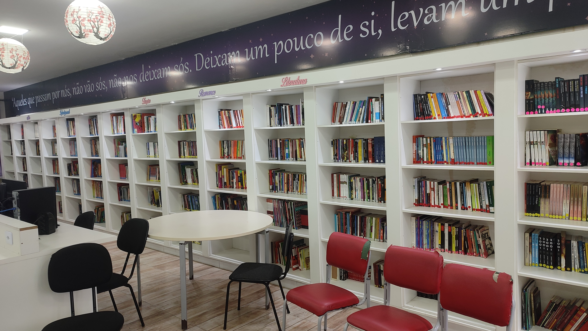
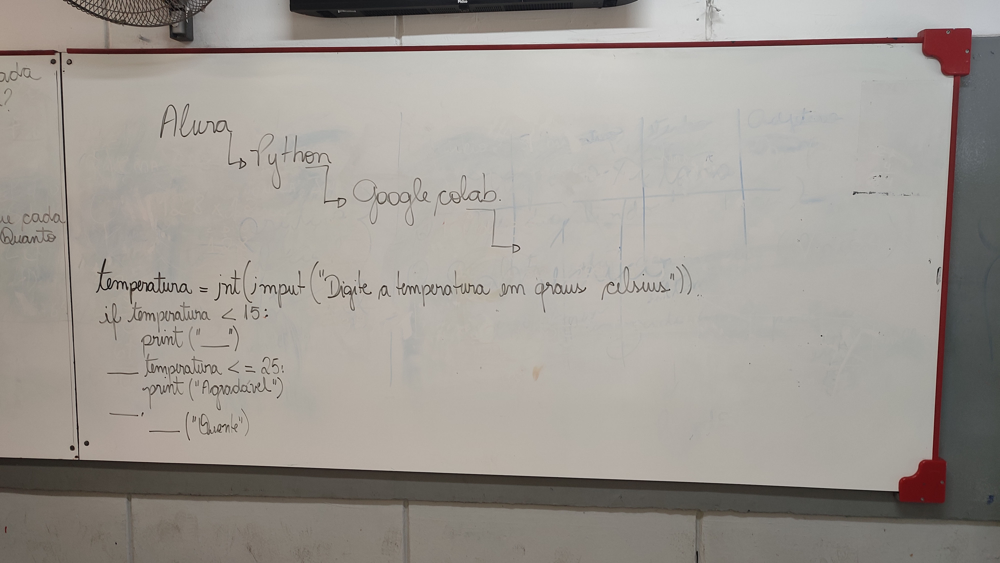
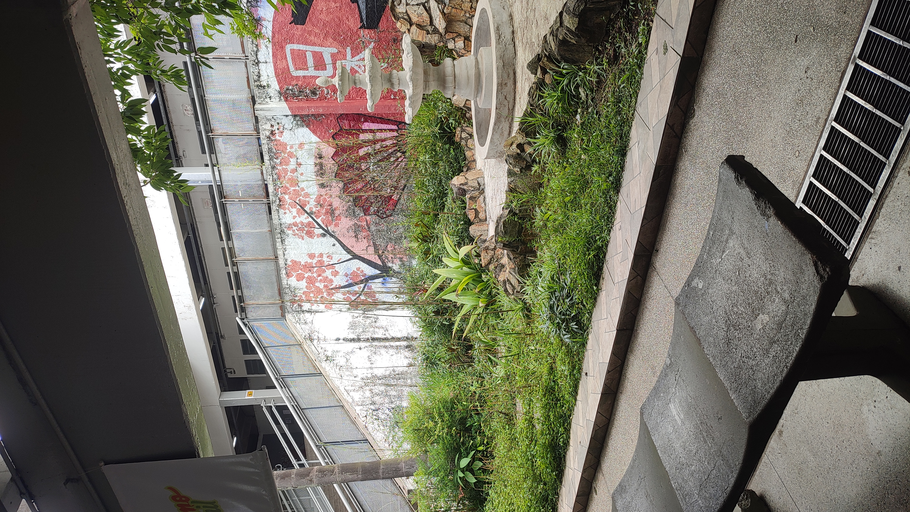
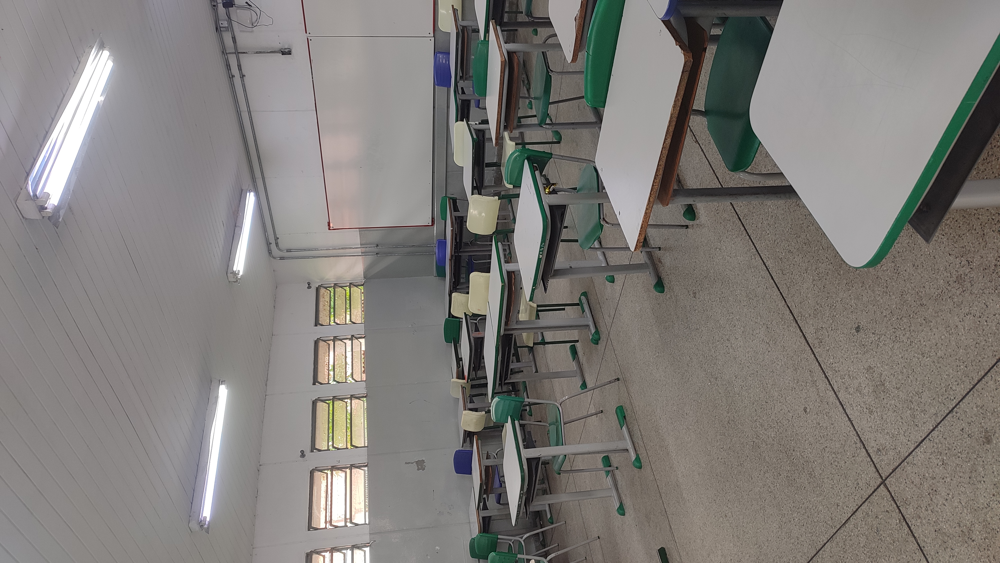
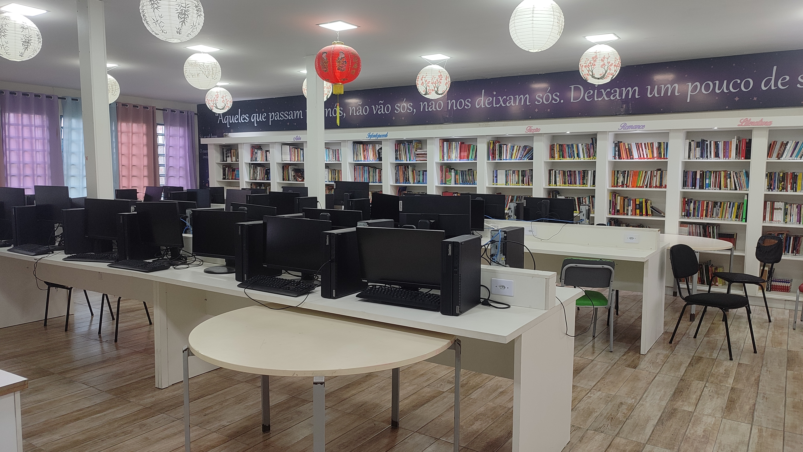

Registro do Projeto
As imagens abaixo registram parte das observações realizadas durante o desenvolvimento do projeto extensionista na escola. Os registros mostram os espaços utilizados pelos alunos e professores, além da infraestrutura tecnológica disponível.







